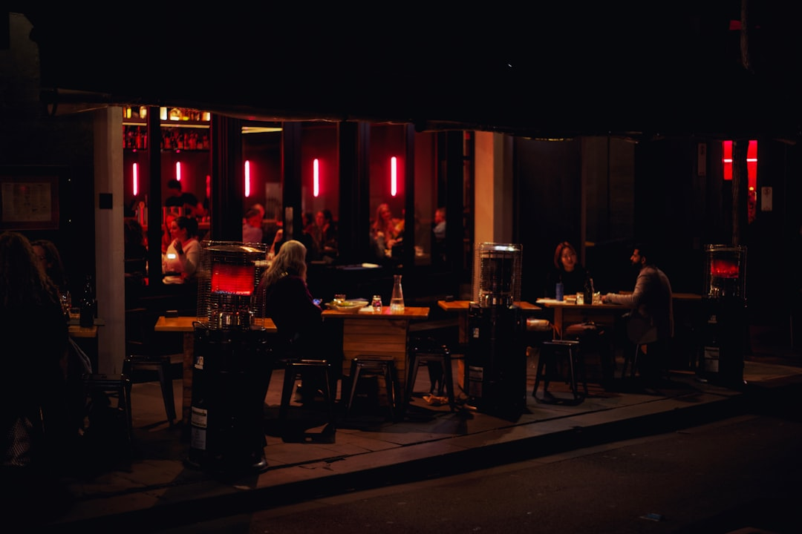

Melbourne diners can use the published directory to compare 9 provider types, including Asian, casual and family, fine dining, Italian, Modern Australian, seafood, steak and grill, and vegetarian and vegan options. The source page shows featured listing ratings from 4.0 to 4.9, with review counts ranging from 367 to 2684, and says browsing listings, reading reviews and requesting quotes is free.
For diners comparing restaurants in melbourne, the useful starting point is matching the occasion, location, menu style and booking need before choosing a venue profile.
Restaurants in Melbourne Explained
Best Melbourne Restaurants presents itself as a Melbourne dining directory where readers can browse cross-checked business listings, compare reviews, view photos and contact venues directly. That makes it most useful as a shortlisting tool, not as a final decision made from one rating or one category label.
Start with the decision you actually need to make. A family meal, a private dining enquiry, a quick casual booking and a special occasion dinner all ask different questions. The directory categories help narrow the field, but the profile details should carry the final comparison. Look for menu information, reservation pathways, private dining or function notes where supplied, and whether the venue description matches the meal you are planning.
The review numbers shown on featured listings give useful context because a rating with many reviews carries a different kind of signal from a rating with only a smaller sample. Still, the page does not claim that rating alone proves fit. Treat reviews as one input beside cuisine, location, booking availability, group needs and the kind of service you want.
Choosing By Occasion Rather Than Category Alone
The category list is broad: Asian, casual and family, fine dining, Italian, Modern Australian, restaurants, seafood, steak and grill, and vegetarian and vegan. A cleaner way to use those labels is to connect each one to an occasion. Casual and family options suit diners checking comfort and group practicality. Fine dining points readers toward venues where menu style, reservation planning and functions may matter more.
Vegetarian and vegan, seafood, steak and grill, and Italian are more menu-led categories. They are useful when the group already knows the main food preference. Asian and Modern Australian are broader starting points, so the profile text and photos become more important. If a listing gives limited detail, the safest next step is to check the venue's own menu and booking information before making plans.
For people who want a wider comparison, the related guide to Melbourne restaurants can be used as a companion page while keeping this guide focused on category and profile checks.
Location Checks That Actually Affect The Meal
The source page includes location browsing and examples across Melbourne suburbs such as Richmond, Carlton, St Kilda, Collingwood, Fitzroy, Northcote, South Yarra, Docklands, Southbank, Glen Waverley and Prahran. Those place names are useful when they answer a real dining question: how far people need to travel, whether the area suits the occasion, and whether the cuisine category appears in the suburb being considered.
A suburb filter should not replace reading the listing. A nearby option can still be wrong for the group if the cuisine, booking path or venue format does not match the plan. Conversely, a slightly less convenient location can be sensible if the profile clearly fits a specific need such as a steak dinner, a vegan meal, a seafood preference or a private function enquiry.
- Use location first when travel convenience is the constraint.
- Use category first when the food style is non-negotiable.
- Use review count and profile depth when choosing between similar options.
- Use direct contact when menus, functions or availability need confirmation.
Who This Applies To
This guide is for diners who want an organised way to compare Melbourne venue listings before contacting a restaurant. It suits locals planning a regular meal, visitors trying to understand category choices, groups balancing different food preferences, and organisers who need to ask about reservations or private dining.
It is less useful for someone wanting live availability, confirmed trading details or a guaranteed current menu from a third-party page alone. The source text itself points readers toward venue information for menus, reservations, private dining or functions where those details are needed. That is the right boundary: use the directory to shortlist, then confirm the details that can change directly with the venue.
Businesses are also part of the directory audience. The page invites operators to claim a free listing or upgrade to Pro for priority placement, photos and lead tracking. Diners should read that as context for how listings may appear, while still judging each venue on the information shown and any direct confirmation they receive.
A Practical Shortlist Method
A strong shortlist usually has three to five candidates, each kept for a specific reason. One may be the closest suitable option, another may have the clearest menu fit, and another may have stronger review volume. That structure is better than saving every listing in a category and trying to decide later.
For each candidate, write down the category, suburb, rating, review count and the missing question. Missing questions are often simple: Is the menu current, can the venue take the group size, are reservations needed, and does the venue handle private dining or functions? The source page says users can get in touch directly by call, email or quote request through a form, so unresolved details can move from browsing to enquiry quickly.
Do not overread a short description. A phrase such as diverse menu, Japanese restaurant, authentic regional cuisine or premier steakhouse gives a starting signal, but not the full dining experience. The useful action is to compare the visible facts, then confirm the details that affect the booking.
- Pick the occasion. Decide whether the meal is casual, family-focused, fine dining, menu-led or function-related before comparing listings.
- Choose the first filter. Start with category if cuisine matters most, or location if travel is the main constraint.
- Compare visible signals. Review the rating, review count, photos, category label and description for each shortlisted profile.
- Confirm changeable details. Check menu, reservation, function and availability information directly before relying on a listing.
| Path | Best when | Check before deciding |
|---|---|---|
| Category browsing | The food style matters most | Menu fit, profile detail and review count |
| Location browsing | Travel convenience comes first | Whether the suburb result also suits the occasion |
| Featured profiles | You want a quick shortlist | Rating context, number of reviews and booking details |
Common questions
How many provider types are listed? The source page says readers can browse 9 provider types across Melbourne, with categories including Asian, casual and family, fine dining, Italian, Modern Australian, seafood, steak and grill, and vegetarian and vegan.
Can I rely on ratings alone when choosing a venue? Ratings are useful, but they should be read beside review count, category fit, location and profile detail. The featured listings shown on the source page range from 4.0 to 4.9 with different review volumes.
Does the directory handle bookings itself? The page says users can contact businesses directly by call, email or a quote request form. For menus, reservation details, trading details and booking availability, confirm with the venue before making plans.
Is this only for diners? No. The source page also speaks to businesses, saying operators can claim a free listing or upgrade to Pro for priority placement, photos and lead tracking.
This guide covers practical ways to compare Melbourne dining listings by category, location, reviews and direct enquiry.